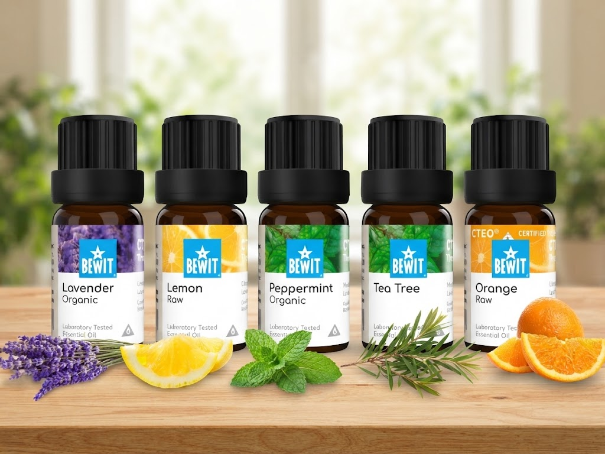

🌿 Lekce 12
pět základních, se kterými nešlápnete vedle
Nemusíte mít celou sbírku. Ukážu vám pět olejů, které stačí na začátek, a řeknu vám, k čemu se který hodí.

Když člověk začíná, láká ho koupit všechno najednou. Většina lidí pak používá dvě, tři lahvičky a zbytek leží v šuplíku. Pět základních olejů pokryje klid, svěžest, bdělost, čistotu i dobrou náladu. Ostatní přidáte, až zjistíte, co vám sedí.
Nejuniverzálnější olej. Zklidňuje mysl, podporuje spánek a hodí se i na péči o pokožku. Když nevíte, kterým začít, začněte tímhle. Více o levanduli →
Svěží olej, který čistí mysl a zlepšuje náladu. Hodí se do difuzéru při práci nebo při úklidu. Více o citronu →
Probírá z únavy a pomáhá se soustředit. Je silná, začněte s malým množstvím. Více o mátě →
Olej ochrany a čistoty, který patří do každé domácí lékárničky. Více o tea tree →
Jemný, příjemný, vhodný pro celou rodinu. Rozjasňuje náladu a je fajn na začátek, když ještě hledáte vůně, které vám dělají dobře. Více o pomeranči →
Nosný olej — s ním se oleje ředí. Přečtěte si lekci o nosných olejích.
Roll-on lahvička — abyste mohli olej nosit u sebe. Jak si ji připravit.
Difuzér — když chcete provonět místnost. Vše o difuzéru.
Oleje se na kůži nenanášejí neředěné, vždy je smíchejte s nosným olejem. Jak ředit.
Máta: pro malé děti je nevhodná, u dětí do 24 měsíců se nepoužívá vůbec a nikdy se nenanáší na krk ani na obličej.
Citron a další citrusy: po nanesení na kůži se vyhněte přímému slunci na 12 až 24 hodin.
Všechna upozornění najdete v lekci Bezpečnost při používání.
Na začátek stačí pět olejů: levandule, citron, máta peprná, tea tree a pomeranč.
K tomu nosný olej, roll-on a případně difuzér.
Oleje ředíme a u máty a citrusů dbáme na upozornění.
Další lekce: Roll-on — pokračovat →